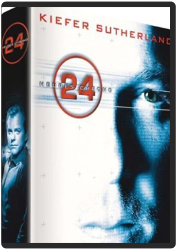
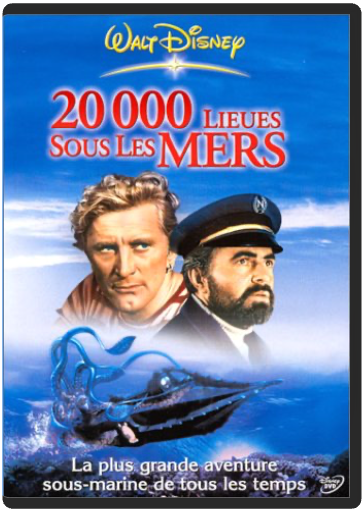

Mariés depuis sept ans, Audrey et Alain s'enlisent dans la routine. Leur couple en pâtit. Sur les conseils d'un ami sexologue, Alain entraîne sa femme dans l'univers du libertinage. Mais au fur et à mesure que celle-ci y prend goût, Alain se sent dépassé. Sympathique comédie de mœurs 7 ans de mariage est la première réalisation en solo de l'ex-Inconnu, Didier Bourdon. Un état des lieux, plein d'humour, du désir dans le couple moderne, où papa et maman travaillent et ont sacrifié leur vie sexuelle à leur réussite professionnelle et à l'éducation de leur enfant. Sensible et bien vu. En bonus : des scènes coupées, des interviews, un making-of et une bande-annonce. —George Maubeuge  24 heures chrono, saison 1 Jack Bauer, patron d’une cellule antiterroriste, est chargé de veiller à la sécurité d’un sénateur noir, candidat à la présidence des États-Unis. Mais lorsqu’il prend connaissance d’un complot visant à assassiner ce dernier, il sait que pour le déjouer il devra subir la plus longue journée de sa vie… Un thème et une histoire pas vraiment originaux, mais un concept révolutionnaire : l’intégralité de la série, qui se déroule en 24 heures (de minuit à minuit), tient sur 24 épisodes d’une heure… et l’on peut donc suivre l’action en temps réel. C’est quasiment à un documentaire caméra à l’épaule que l’on a l’impression d’assister. L’enquête qui se joue petit à petit sous nos yeux n’en devient que plus palpitante, grâce également à une utilisation ingénieuse des caméras (qui permettent de suivre l’action sous différents angles et points de vue). Kiefer Sutherland, dont la carrière cinématographique avait plutôt tendance à stagner, a eu une excellente intuition en acceptant le rôle de Jack Bauer, dans lequel il est réellement impressionnant. Lauréat d’un Golden Globe pour 24 heures chrono, il a d’ailleurs rempilé pour une seconde saison. En attendant de la découvrir, vous pouvez tenter l’exploit et vous passer les 24 premiers épisodes à la suite, en temps réel : vous passerez une journée unique, à n’en pas douter. —David Rault  Jack Bauer est de retour pour la troisième journée la plus longue de sa vie. Difficile de parler de 24 sans gâcher un élément de surprise, alors que l’essence même de la série est d’offrir en moyenne un retournement de situation par épisode. Disons simplement qu’avec cette troisième saison, qui concilie la fluidité narrative et la dramaturgie humaine de la première saison et le spectaculaire, la noirceur et le politiquement incorrect de la deuxième, 24 arrive à maturité. Centrée sur une trame principale très efficace, la série n’hésite plus à se salir les mains. Génocide, euthanasie, exécutions sommaires… plus rien n’arrête les scénaristes, passés maîtres dans l’art de pousser le bouchon toujours plus loin. |  Les pires menaces guettent les Etats-Unis. Chaque fois Jack Bauer ne dispose que de 24 heures pour empêcher la catastrophe... Un nouveau concept innovant, et un suspense quasi insoutenable.  20000 lieues sous les merswalt disney En 1868, un monstre mystérieux s'acharne sur les bateaux naviguant dans l'océan Pacifique. Alarmé par ce phénomène, le gouvernement américain décide d'envoyer une frégate afin d'élucider les étranges disparitions et éventuellement tuer le monstre... Parmi l'équipage se trouvent un fabuleux harponneur, Ned Land, un homme de science, Aromax, et son assistant. Après plusieurs mois de recherches infructueuses, la frégate est sur le point d'abandonner sa mission lorsqu'elle est attaquée par un puissant vaisseau commandé par le capitaine Némo... |

Julien
Collection Total:
2 053 Items
2 053 Items
Last Updated:
May 23, 2024
May 23, 2024


 Made with Delicious Library
Made with Delicious Library